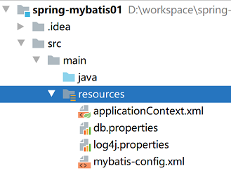
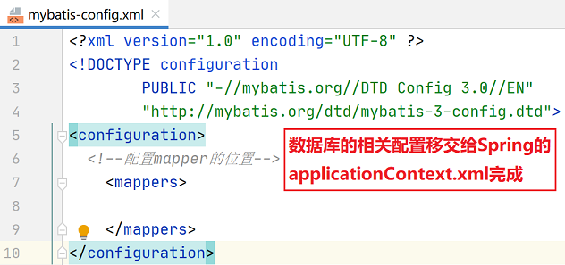
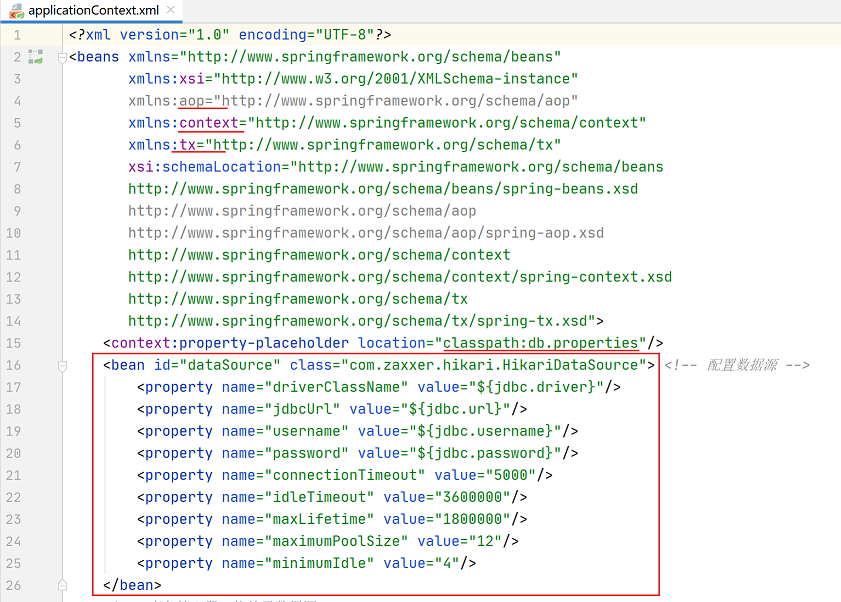
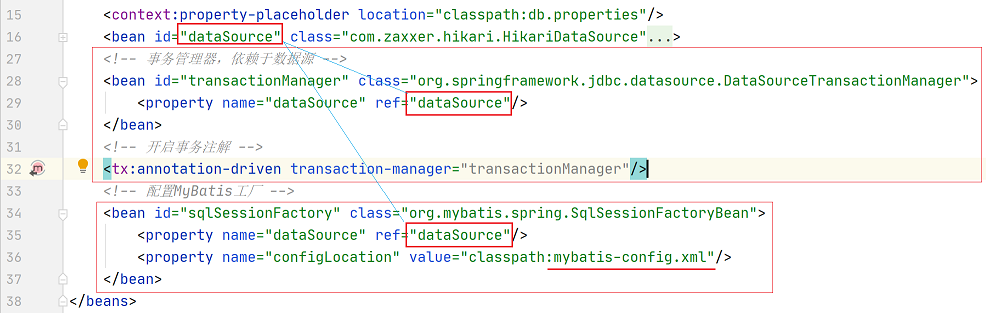
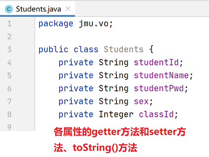
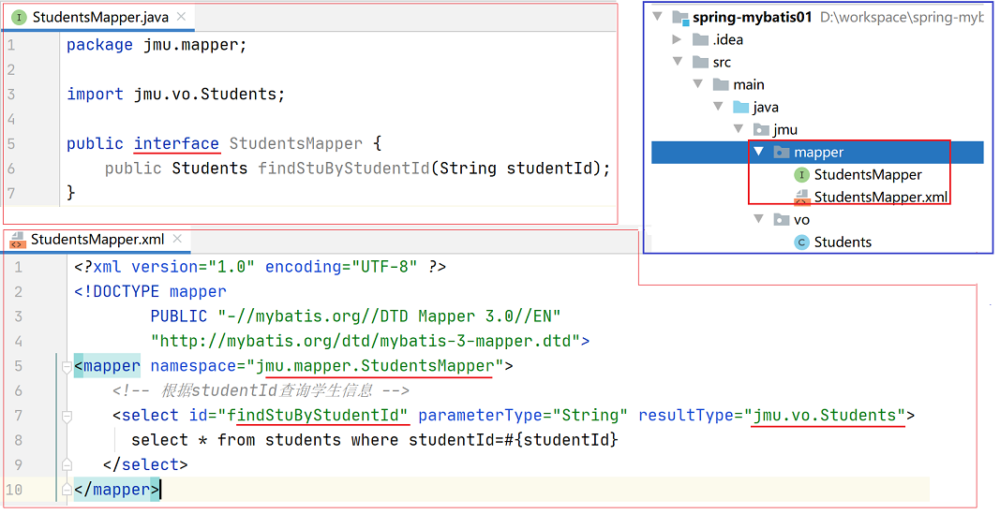
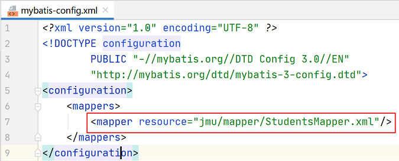
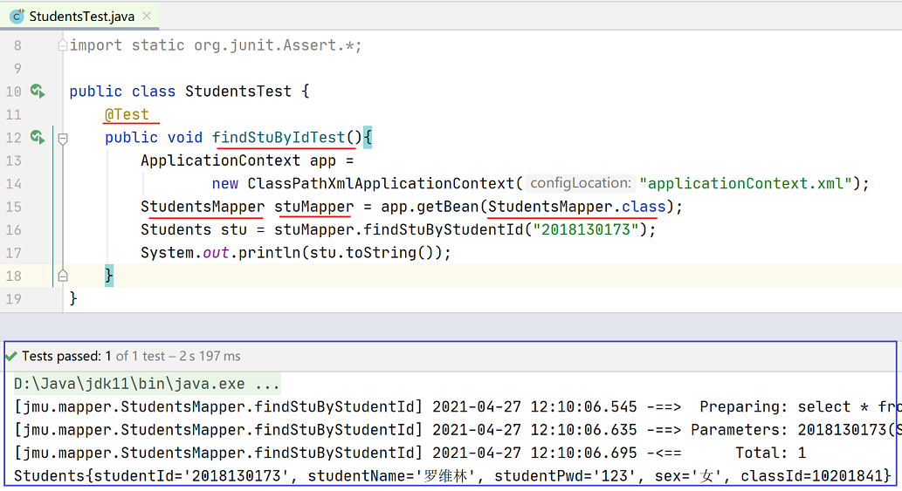
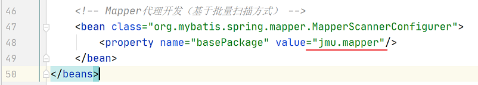

案例： MyBatis基本应用中的 数据库mybatis，表students， 根据studentId进行学生信息查询。
(1)在IntelliJ IDEA中创建maven项目，不选择模板， 命名为spring-mybatis01。
(2)配置pom.xml文件，，
取spring项目pom.xml文件和mybatis项目pom.xml文件的并集。
为了方便大家，提供了SM整合-spring-myBatis-pom.txt
模板，可直接copy修改使用。
(3)在项目的src/main/resources目录下， 创建db.properties文件、log4j.properties文件、Spring的配置文件、MyBatis的配置文件。
注意：db.properties文件中数据库名称、密码等要根据实际项目修改。
log4j.properties调试项目包的前缀也应根据实际项目修改。


整合方向：将mybatis-config.xml中的数据源配置移交给Spring的applicationContext.xml。
 
Mapper接口编程方式只需要程序员编写Mapper接口（相当于DAO接口），然后由MyBatis框架根据接口的定义创建接口的动态代理对象，这个代理对象等同于DAO接口的实现类的方法。
虽然使用Mapper接口编程的方式很简单，但是需要遵循以下规范。
①Mapper接口的名称和对应Mapper.xml映射文件的名称必须一致；
②Mapper.xml文件中的namespace与Mapper接口的类路径相同（即接口文件和映射文件需要放在同一个包中）；
③Mapper接口中的方法名和Mapper.xml中定义的每个执行语句的id相同；
④Mapper接口中方法的输入参数类型要和Mapper.xml中定义的每个SQL的parameterType的类型相同；
⑤Mapper接口方法的输出参数类型要和Mapper.xml中定义的每个SQL的resultType的类型相同。
(4)在src/main/java目录下，创建包 jmu.vo包， 在该包中创建持久化类Students。

(5)在src/main/java目录下，创建包 jmu.mapper包， 在该包下创建StudentsMapper接口 （StudentsMapper.java） 以及对应的映射文件 （StudentsMapper.xml）。

(6)在MyBatis的配置文件 mybatis-config.xml中， 引入StudentsMapper.xml映射文件。

(7)在Spring的配置文件 applicationContext.xml中， 创建一个id为studentsMapper的Bean。
(8)为Students类创建测试类 StudentsTest，编写测试方法 findStuByIdTest()。

存在问题： 需要针对每一个mapper进行配置，导致applicationContext.xml臃肿。
解决方法： 通过Mapper的批量扫描来解决，从Mapper的包中扫描出Mapper的接口，自动创建代理对象， 并且在Spring的容器中注册。

(9)再次测试，仍能得到相同结果。